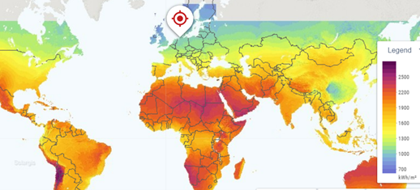
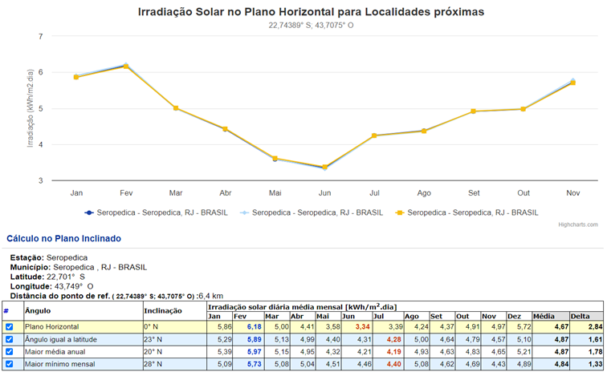
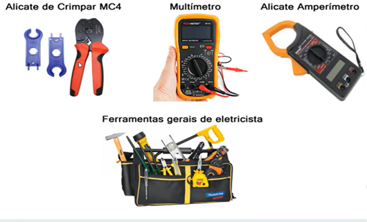
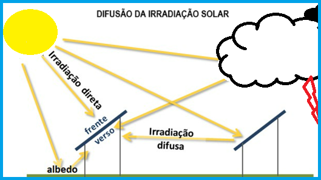
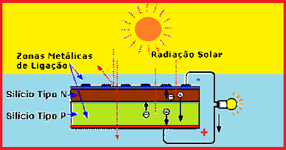

O Brasil dispõe de grande potencial para a aplicação da energia solar e é privilegiado por possuir elevados níveis de irradiação solar. O mapa de irradiação solar da LABREN , pode nos ajudar a entender melhor através de seu ATLAS. Mas a nossa referência, para adoção de padrões e dimensionamentos, será feita através do CRESESB, e de seu ATLAS.
Apesar de seu potencial, o Brasil ainda subaproveita seu potencial natural. Dados do Centro de Pesquisas de Energia Elétrica da Eletrobras (Cepel) mostram que a irradiação solar global no plano horizontal para a Região Nordeste varia entre um mínimo de 4,4 quilowatt-hora por metro quadrado por dia (kWh/m2/dia) e um máximo de 5,8 kWh/m2/dia, de acordo com médias diárias anuais. Para se ter uma ideia, na Alemanha, a líder mundial na geração de energia solar, a média diária anual vai de cerca de 2,9 kWh/m2/dia, no Norte do país, até por volta de 3,8 kWh/m2/dia na parte Sul de seu território. Através do Mapa solar global podemos ter uma boa ideia do potencial brasileiro para geração de energia elétrica através da energia solar, se compararmos o Brasil à um dos maiores produtores do Mundo: A Alemanha. (Fonte: FAPERJ, 2023)

De posse das coordenadas geográficas de determinada localidade no Brasil, é possível ter acesso as tabelas de irradiação CRESESB com valores de kWh/m².dia, que serão fundamentais para os cálculos de potência dos Painéis.
Ao sul do Equador, estudos mostram que a melhor eficiência ocorre quando inclinamos os módulos com o ângulo igual a latitude e na direção Norte (alguns estudos apontam azimute - NE entre 2,5E e 7,5E)

Acima vemos o gráfico e tabela de irradiação média da Cidade de Seropédia, extraida do site do CRESESB, através das coordenadas geográficas. Com esses dados, o CRESESB possibilita aos projetistas o dimensionamento de sistemas de geração de energia fotovoltaica em todo o Brasil.
Um Instalador tem como ponto de partida a Venda, em seguida realizar um estudo de viabilidade seguido de dimensionamento, compra de materiais, instalação e homologação, para implantação de um sistema fotovoltaico, a fim de reduzir os valores das faturas de energia e eliminar os efeitos da intermitência da rede da concessionária em uma casa.
Abaixo um resumo do que o instalador fotovoltaico deve saber.

"É o sistema que permite aos clientes instalar, em seus imóveis, geradores de pequeno porte (até 5MW), que utilizem energias renováveis ( Solar, Eólica, entre outra) para consumo próprio." (LIGHT, 2023).
Para instalações de sistemas fotovoltaicos é necessário haver um responsávels técnico pelo projeto e pela obra. Logo, quem faz a análise de viabilidade técnica é um técnico em eletrotécnica ou um engenheiro.
O modelo mais adotado neste mercado é o de integração. Onde uma empresa, através de um engenheiro, se responsabiliza pelo projeto, fiscalização, intermediação para aquisição de equaipamentos e homologação da usina. Já o instalador, chamado de integrador, faz a venda, o CHECK LIST - o levantamento de dados do local e do cliente, conforme a solicitação do setor de integração da empresa parceira - e, aprovada a obra pelo responsável técnico, a instalação de acordo com o projeto. O suporte e o pós-venda, geralmente é compartilhada. Contudo, o primeiro contato é sempre com o integrador, que assume boa parte do suporte e pós-venda.
O CHECK LIST possui a seguinte estrutura básica:
Atualmente, há diversos aplicativos desenvolvidos especialmente para facilitar o trabalho de servidores que realizam visitas técnicas, contando com recursos como o checklist. Os apps de visita técnica podem oferecer diversos benefícios e facilidades para quem trabalha com instalação e manutenção de painéis solares. Assim, auxiliam na execução do serviço e evitam que o integrador solar se esqueça de alguma etapa do processo. Em alguns deles, há também a opção de integrar com os melhores GPS, facilitando o trajeto percorrido pelo profissional até o local onde será realizada a visita.

O efeito fotovoltaico é o processo que gera eletricidade. As partículas de luz que viajam do Sol à Terra a cada dia, são chamadas de fótons. Os fótons levam cerca de 8 minutos e 20 segundos para percorrer a trajetória do Sol até a Terra.
Quando os fótons atingem as células fotovoltaicas, eles fazem com que alguns dos elétrons que circundam os átomos se desprendam. Esses elétrons livres vão migrar, através da corrente elétrica, para a parte da célula de silício que está com ausência de elétrons.

Durante o dia todo, os elétrons irão fluir em uma direção constante, deixando os átomos e preenchendo lacunas em átomos diferentes. Este fluxo de elétrons cria uma corrente elétrica, ou o que nós chamamos de energia solar fotovoltaica.